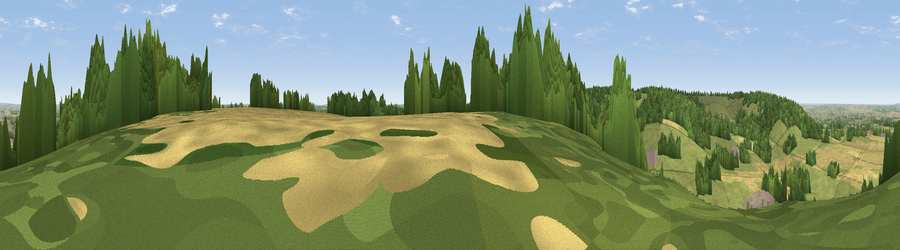

Viewpoint near St Leonards
#32617 in England · top 44% of its area beats it · near St LeonardsWhere it is
The exact computed spot (SP 91175 09125). Click the marker for map links.
The view, rendered

A 360° render of this exact spot computed from the terrain model, tree cover and land cover — summer colours, afternoon light, calibrated against photographs of famous viewpoints. Real trees, hedges and buildings will differ in detail.
The panorama
Grey silhouette: terrain skyline in each direction (720 bearings, Earth curvature and refraction included). Dashed green: skyline with trees (+15 m) and buildings (+8 m) as obstacles. Blue strip: how far the ground is visible on each bearing.
Where the view opens
Wedge length = distance to the farthest visible ground on that bearing (vegetation-aware). Rings at 10, 25 and 50 km.
What fills the view
45% grassland · 33% woodland · 18% cropland · 4% built-up
Angular shares of the visible panorama (visual magnitude), not map area. Landscape diversity 0.51 (0–1 Shannon).
Key numbers
More beautiful places nearby
The staircase of upgrades: each row has a higher view potential than everything closer. Driving times are estimates from straight-line distance, calibrated against real road routing — check an actual route before setting out.
| Place | Direction | Drive | Score |
|---|---|---|---|
| Pavis Wood | E · 0 km | ~1 min | 45.0 |
| Viewpoint near Tring | NE · 1 km | ~2 min | 52.5 |
| Viewpoint near Tring | NE · 1 km | ~4 min | 55.1 |
| Viewpoint near Halton | WNW · 3 km | ~7 min | 74.3 |
| Coombe Hill Monument | WSW · 7 km | ~14 min | 75.5 |
| Viewpoint near Woolstone | WSW · 65 km | ~88 min | 76.7 |
| Viewpoint near Meon Vale | WNW · 82 km | ~106 min | 77.0 |
| Broadway Hill | WNW · 84 km | ~108 min | 77.7 |
51.77338, -0.67997 · source: screening · position refined by local search. Computed location — check access rights before visiting.